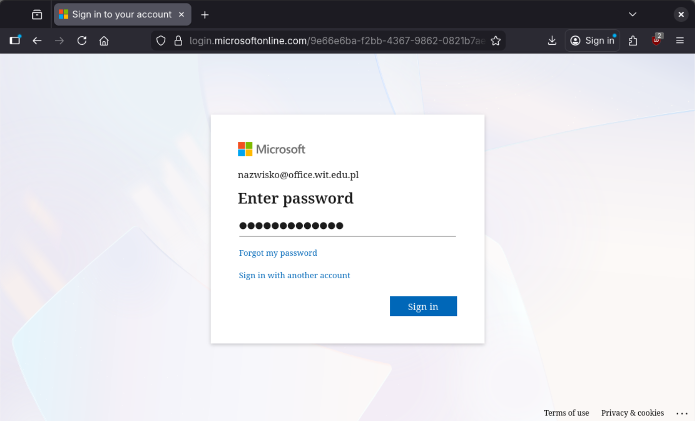
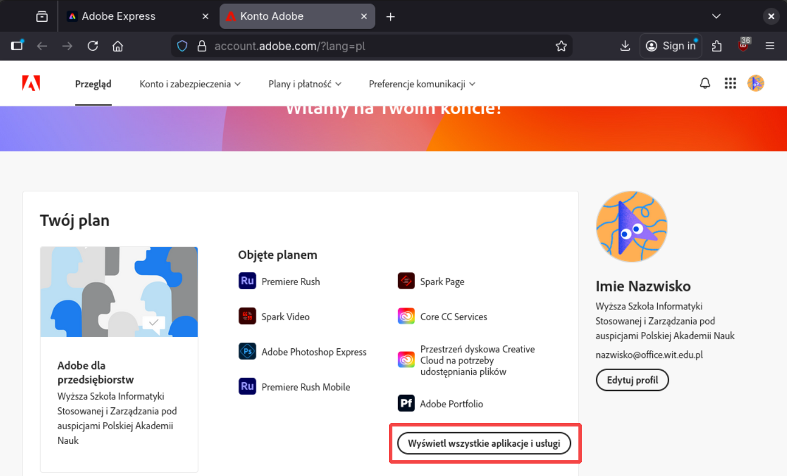
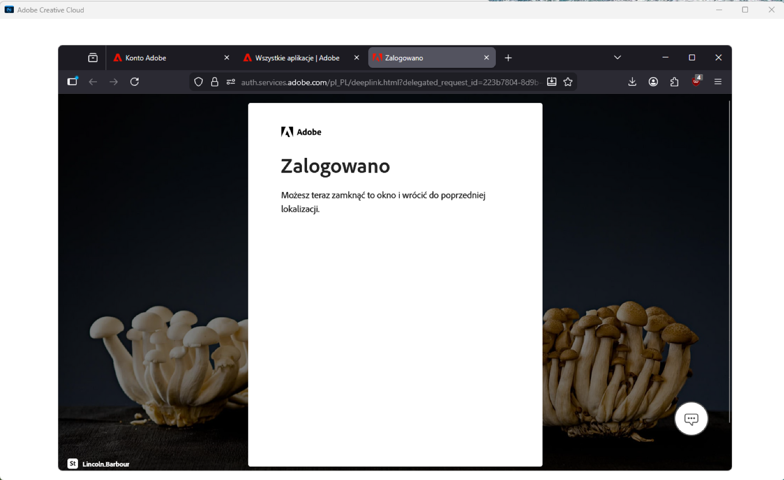

<!--

<h2>Dostęp do programów i usług Adobe</h2>
<p class="lead">
    Studenci Akademii WIT mają dostęp do programów Adobe używanych w realizacji programu.
    Poniższa instrukcja pokazuje proces logowania 
    na zapewnione przez uczelnię konto Adobe oraz 
    dostęp do programów.</p> 

    -->

<div class="accordion-body instrukcja-tresc">
    <ol>
        <li>
            Zaloguj się na stronie internetowej <a href="https://adobe.com/pl/">
                Adobe</a>
            <ul>
                <li>
                    <strong>
                        Adres e-mail:
                    </strong>
                    Użyj <a href="">adresu
                        e-mail</a> do usług Office - <code>nazwisko@office.wit.edu.pl</code>
                </li>
                <li>
                    <strong>
                        Hasło:
                    </strong>
                    Twoje <a href="">hasło
                        systemowe</a> UBI.
                </li>
                <li>
                    <strong>
                        Ważne - hasło należy zmieniać tylko w UBI
                    </strong>
                </li>
            </ul>
            
        <li>Po podaniu adresu e-mail, ponieważ logujesz się przez konto Microsoft, nastąpi
            przekierowanie, podaj hasło systemowe UBI.<br>
            
        </li>
        <li>
            Po zalogowaniu, masz dostęp do programów w wersji web przez skróty u góry
            strony. Dalsza część instrukcji pokaże jak znaleźć listę wszystkich dostępnych
            programów i usług, a także jak zainstalować aplikację Adobe Creative Cloud, w
            której możesz pobierać programy i korzystać z dostępnych usług Adobe.<br>
            
        </li>
        <li>
            Naciśnij profil w prawym górnym rogu i wybierz "Zarządzaj kontem". <br>
            
        </li>
        <li>
            Na stronie konta wybierz "Wyświetl wszystkie aplikacje i usługi".<br>
            
        </li>
        <li>
            Następnie kliknij "Uzyskaj dostęp do aplikacji i usług".<br>
            
        </li>
        <li>
            Tutaj możesz pobrać dowolną aplikację, wybór nie ma znaczenia, gdyż zainstaluje
            się aplikacja Adobe Creative Cloud, w której wybieramy pożądane programy.<br>
            
        </li>
        <li>
            Po pobraniu uruchom instalator.<br>
            
        </li>
        <li>
            Automatycznie otworzy się w przeglądarce okno,
            które może poprosić cię o zalogowanie,
            proces jest taki sam jak na początku instrukcji. Instalacja może trochę potrwać.<br>
            
        </li>
        <li>
            Po instalacji, program Creative Cloud powinien automatycznie się uruchomić,
            w przeciwnym razie uruchom go ręcznie. W sekcji Aplikacje, możesz zainstalować
            aplikacje dostępne w obrębie twojej licencji.<br>
            
        </li>
</div>